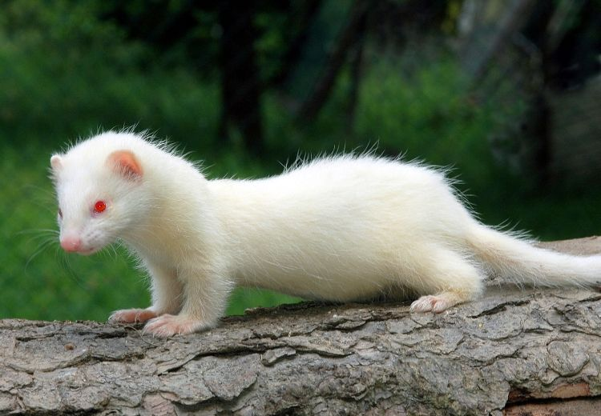
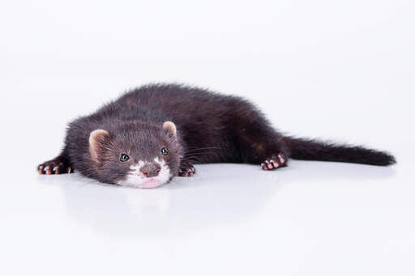
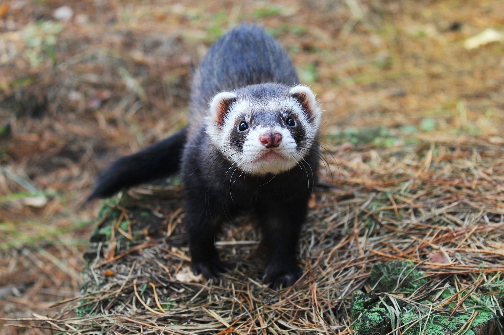
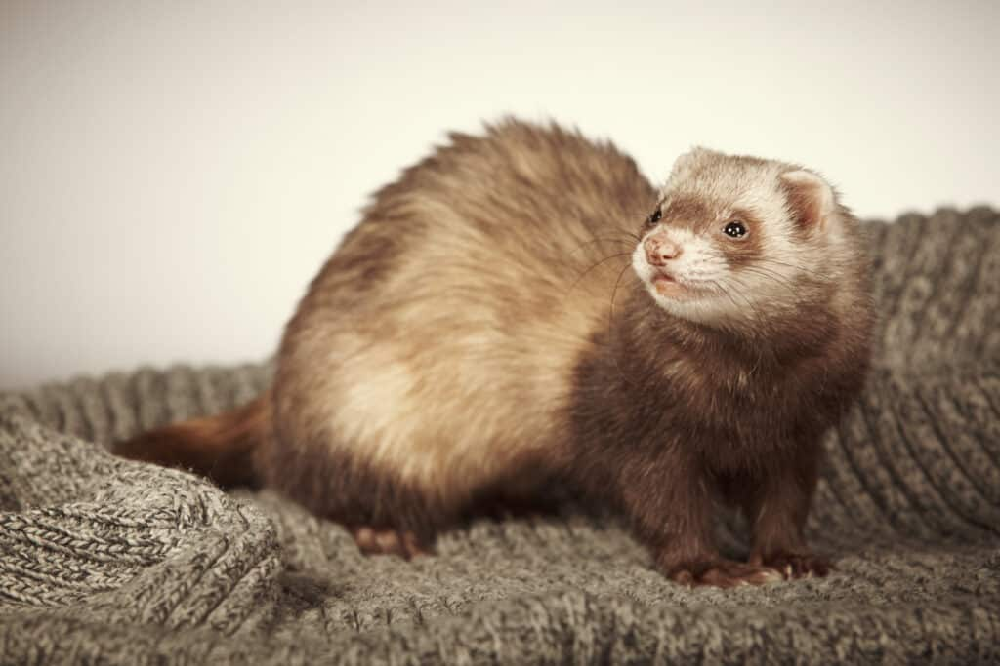
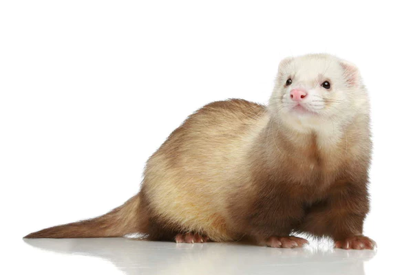
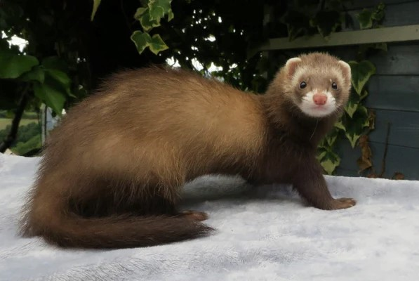
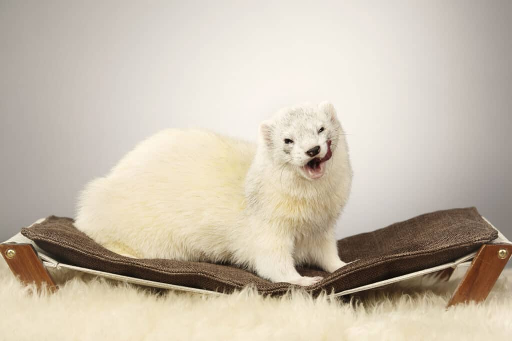
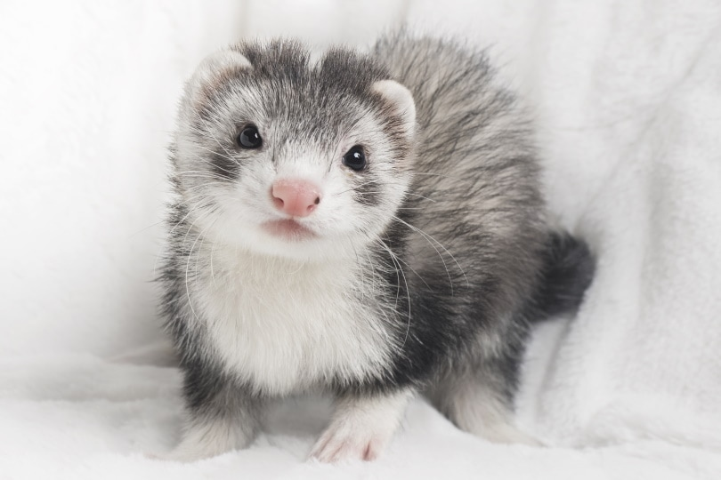
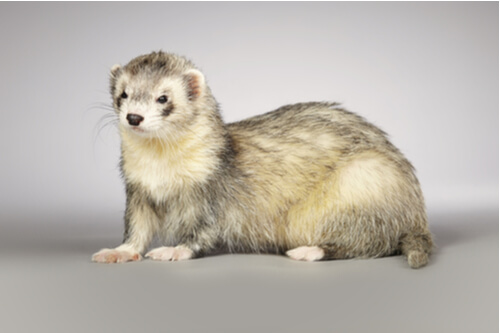
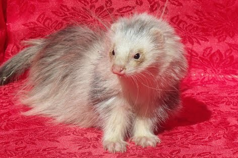

Albino Ferrets: are completely white. They are often born deaf and usually have red eyes.

Black Sable Ferrets: have shiny, dark hair that looks black to the eye but is actually ash-colored.

Black Footed Ferrets: that have been domesticated are one of the more common ferret types.

Champange Ferrets: have a caramel colored mask and tail and look similar to cinnamon and chocolate ferrets.

Cinnamon Ferrets: are considered the rarest type of ferret. They are easily confused with champange ferrets and chocolate ferrets.

Chocolate Ferrets: are another common type of ferret, however, they are much lighter than the black footed ferret.

Dark Eyed White Ferrets: are much like albino ferrets with white hair and a pink nose but they do not have the red eyes.

Blaze Ferrets: typically have grey and white hair with a very distinct pattern type. The blaze coat can be many different colors.

Mutt Ferrets: sometimes look like blaze ferrets but their coats are much more random. Mutts usually don't fit into any color or pattern category.

Angora Ferrets: have a different hair type than all other ferrets. They are very fluffy and often considered rare.